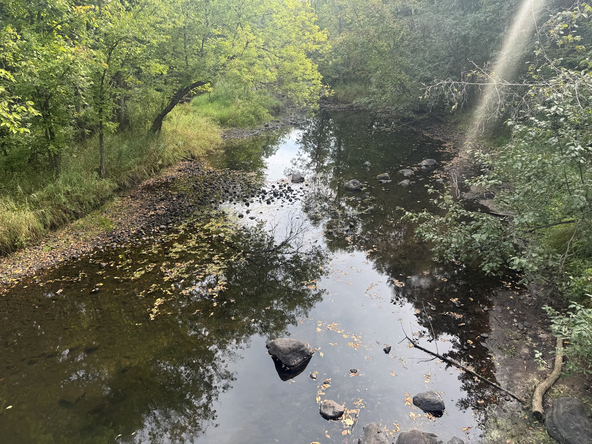
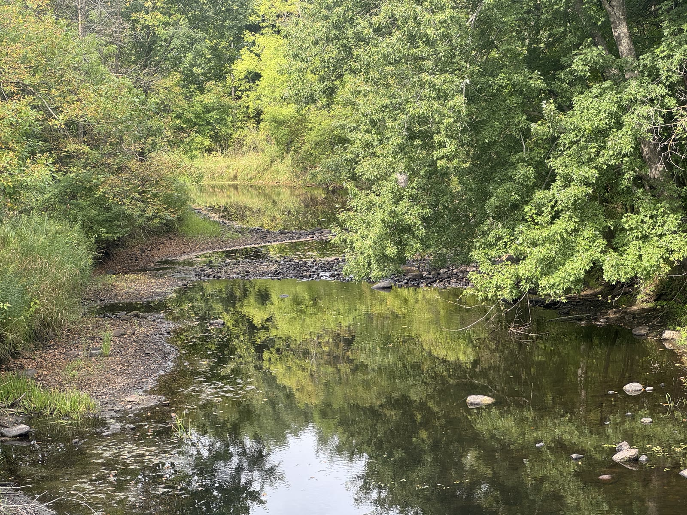
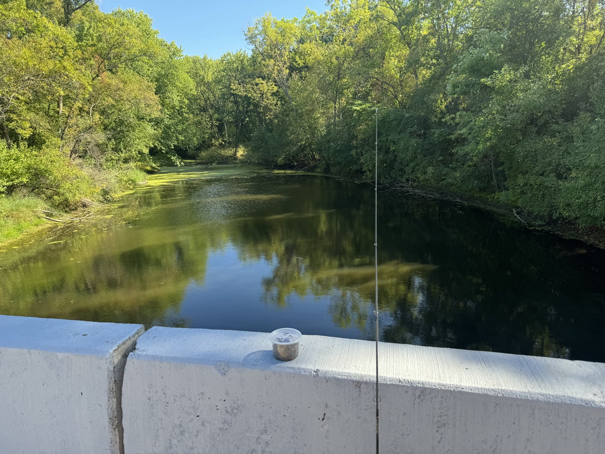
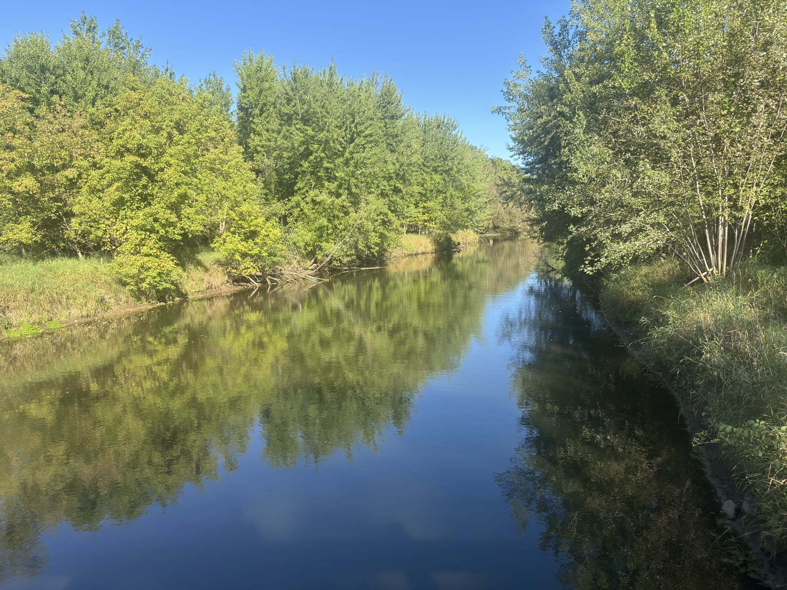

Creek with a sunbeam
Shallow water, round rocks, and that diagonal streak of light through the canopy.
Wooded stream
Mirror-still water and a thin stone crossing — classic Sherburne green tunnel vibes.
Bridge fishing stop
Rod on the rail, river ahead — a reminder that ride days can include lingering.
River overlook
Blue sky, green banks, and the kind of view that makes you stop pedaling for a minute.
Got more? Drop photos anytime and we can grow this gallery — trailheads, café stops, fall color, winter fat-bike frost, the works.